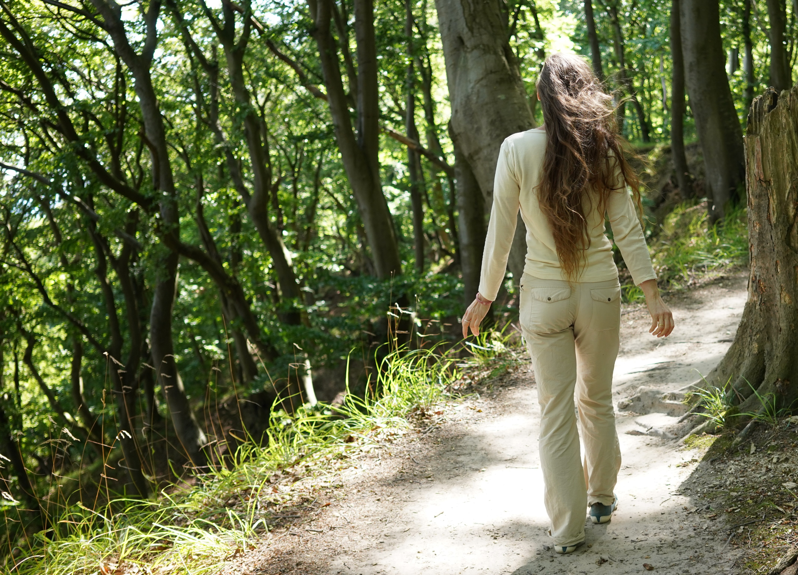

Coaching
Körperarbeit und Emotional Release

Ich lade Sie ein auf eine Reise zu sich selbst, um Klarheit, Erleichterung, Bewusstsein und Heilung zu finden. Alles liegt in Ihnen, auch wenn der Weg vielleicht gerade für Sie nicht sichtbar ist.
In meiner Coaching-Arbeit begleite ich Sie dabei, Ihr volles Potential zu entfalten und zu leben. Dafür nutze ich Methoden aus verschiedenen Traditionen.
Ich freue mich sehr auf Sie!
Yoga
Kundalini Yoga – eine Reise zu Dir selbst

Kundalini Yoga ist jahrtausende alt. Viele spüren schon in ihrer ersten Yoga-Stunde etwas ganz Besonderes, das sie nicht mehr loslässt. Du findest innere Ruhe, Klarheit, Kraft und Freude. Es ist wie ein Nachhausekommen.
Dich zu Hause fühlen bei Dir selbst – was kann es Schöneres geben?
Energie durchströmt Deinen Körper, Blockaden können sich lösen, Deine Selbstheilung wird angeregt.
Klingt toll? Ist es auch. Probiere es aus!
Du findest zu Dir und entfaltest Dein volles Potential.
Breathwalk®

Breathwalk® ist eine sanfte, wirkungsvolle Methode, die das Gehen, Atemtechniken und Yoga verbindet. An der frischen Luft ausgeführt wirkt es belebend auf den ganzen Körper. Es löst Blockaden, macht flexibler und geschmeidiger, setzt Energien frei. Und ist ganz leicht im Alltag umsetzbar.
Vor allem macht es gute Laune, entspannt, vitalisiert und schafft Klarheit.
Meditation
Sie möchten sich entspannen – wissen aber nicht wie?

Was Urvölker längst wussten haben auch wissenschaftliche Studien zur Wirkung von Meditation dokumentiert: Meditation ist gut für die körperliche und psychische Gesundheit, für Zufriedenheit und Wohlbefinden.
Jede*r entspannt sich anders – finden Sie mit mir IHREN Weg zur ENT-spannung.
Aufrichtung

Die Aufrichtung ist eine sofort sichtbare, dauerhafte und erfolgreiche geistige Heilung – ohne Risiko und ohne Nebenwirkungen!
Erlebnisse, Gedanken und Unfälle sorgen für gesundheitliche Probleme. Eine Aufrichtung hilft unter anderem bei Gelenkbeschwerden, Migräne, Organerkrankungen, Rückenschmerzen, Skoliosen und Verspannungen.
Über mich

Ich wollte schon immer wissen, wie alles miteinander zusammenhängt und bin dafür weit gereist, habe viel studiert und bin am Ende bei mir selbst angekommen. Eine Reise zu mir.
Schon während meiner Schulzeit zog es mich hinaus in die Welt und ich erkundete ein Jahr lang Norwegen, die Sprache, die Menschen und die Kultur. Ich studierte schließlich Dolmetschen und verbrachte viel Zeit in Russland und England. Mein erstes Geld verdiente ich als Nachhilfe-Lehrerin für Sprachen und Biologie, später als Deutsch-Lehrerin am King’s College London sowie als selbstständige Dolmetscherin und Übersetzerin. Ich analysierte als Unternehmensberaterin in- und ausländische Märkte und arbeitete einige Jahre für ein Technologie-Startup im Marketing. Währenddessen studierte ich weiter, machte unterschiedliche Abschlüsse und sammelte Erfahrungen.
Mit den Geburten meiner wundervollen Töchter wurde ich selbst auch irgendwie neu geboren. Ein Umzug löste in mir eine Krise aus und ich musste neue Wege probieren, Gewohntes verlassen. Ich testete Yoga, Meditation, Schamanismus, Energie- und Aufstellungsarbeit und meine Reise ging ab nun sehr tief in MEIN INNERES.
2014 kam ich in Kontakt mit Kundalini Yoga, Bonding-Körperarbeit und Somatic Experience - ich war einfach überwältigt davon, wie schön, leicht und bewusst mein Leben sein kann. Es folgten rasante Transformationsprozesse, Erleichterung und tiefe Heilung, für die ich unendlich dankbar bin.
Für das, was mir so effizient geholfen hat, ließ ich mich ausbilden und habe als Begleiterin meine Berufung gefunden.
Es ist mir eine Freude und ich bin zutiefst dankbar, Menschen auf ihrem Weg zu sich selbst und zu innerem Frieden zu begleiten. Ich liebe es, nach der Arbeit offene Herzen, Licht- und Freudestrahlen zu erleben. Wundervolle Potentiale die sich dabei entfalten und wieder zu leben beginnen dürfen.
Meine Talente habe ich auch wiederentdeckt, sie fließen in meine Arbeit mit ein. Ich male Energiebilder, singe und musiziere leidenschaftlich gerne.
Ich freue mich sehr auf Sie! Schreiben Sie mir oder rufen Sie mich an für ein Kennenlernen.
Meine Ausbildungen
- 2022 - Hanka Sant Want Kaur /Taunus – Breathwalk® Instructor
- 2022 - DISA Dresden, Ralf Lemke - Körpertherapie
- 2022 - Satya Singh Hamburg - Yoga- und Seelenreise-Coach
- 2021 - 3HO München - zertifizierte Kundalini-Yoga-Lehrerin
- 2021 - Siegmund Schreiber/Vaduz (Liechtenstein) - Heilerin für die Aufrichtung
- 2016 - Handelshochschule Leipzig – General Management (MBA)
- 2009 - Universität Leipzig - Dolm. für Englisch & Russisch (Diplom)
- 2006 - Universität Leipzig - Deutsch als Fremdsprache (Magister)